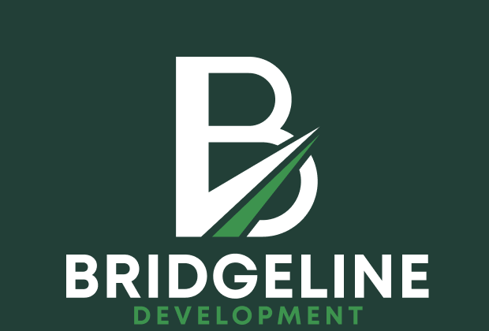
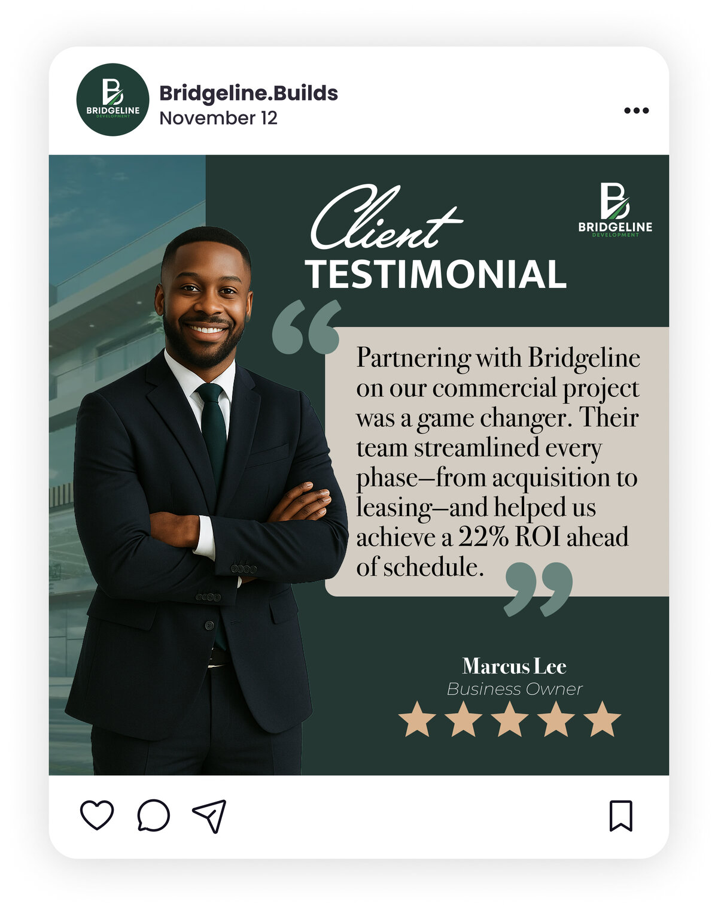

01 — Overview

Bridgeline is a veteran- and woman-owned construction and development firm led by CEO Erica Alexis — The Lady Builder. Strong reputation. Weak digital presence. Investors couldn't quickly assess their experience, scale, or returns from their online content.
As Social Strategist on the team, I translated investor-facing research into a visual content system for LinkedIn and Instagram — building credibility through clarity, hierarchy, and proof.
"Investors judge credibility fast. They value clear metrics, simple process explanations, and evidence of past performance. Anything vague or overly designed reduces trust."
02 — Problem
The problem
The opportunity
03 — Research
Method 01
Stakeholder Kickoff
Conducted a kickoff with the project manager and leadership. Reviewed desired investor-facing information — IRR, track record, risk mitigation. Key finding: need to show development expertise beyond construction.
Method 02
Netnography
Reviewed BiggerPockets forums, Reddit investor threads, public real estate pitch decks, and LinkedIn posts from developers. Key finding: investors judge sponsorship credibility fast — clear metrics over design polish.
Method 03
Secondary Research
Analyzed institutional pitch decks including Liberty Investment Group. Key finding: strongest decks use clean modular layouts, anchor credibility with market data, and surface risk mitigation upfront.
"Institutional pitch decks use clean, modular layouts anchored by market data. Risk mitigation, track record, and financial clarity come first — not last."
04 — My Role
Responsibilities
Process
05 — Visual Content System
The solution was a modular visual content system designed to move investors through four stages. Every asset built to be scalable for future deals.
Stage 01
Awareness
"Building Value, One Project at a Time." Brand introduction. Establishes presence before asking for anything.
Stage 02
Education
"Precision in Every Phase." Process carousel breaking down acquisition, construction, leasing into digestible steps.
Stage 03
Trust
"Turning Investments into Impact." Real metrics, track record, risk mitigation surfaced before vague claims.
Stage 04
Inquiry
"Partner with Bridgeline. Build the Future." Clear CTA. Directs investors to the website or direct contact.
06 — Client Feedback

Client response
Revisions made
07 — Reflection
Early drafts had visual polish where they needed proof. This project taught me to surface ROI and risk mitigation sooner — not after a designed introduction.
"Focusing on trust-first design was highly effective. Strong hierarchy, clean spacing, and consistent typography helped make investor information feel credible and easy to scan."